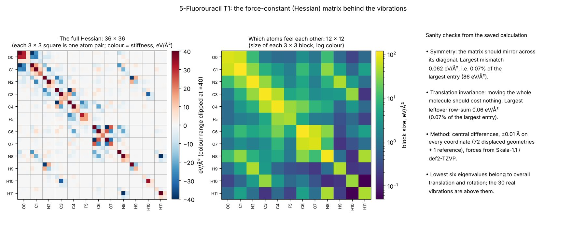
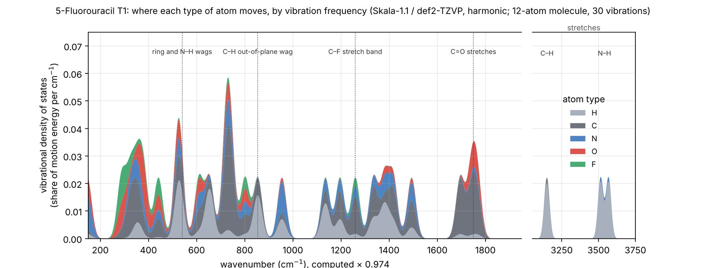
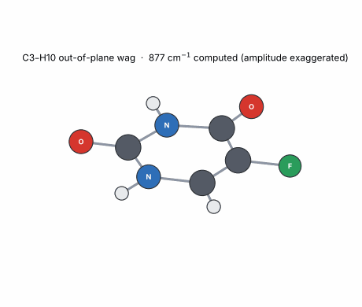
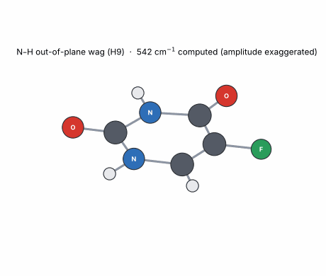

What we found, and what backs each number
Each finding below has an easy version, the number, and the file it comes from. Every number can be recomputed from the released data.
a stable shape (true minimum)
computed vs measured, 1800 to 300 cm⁻¹
factor fitted on the same bands
the drug's strongest peaks
All three findings in one figure


1 · Different starts end in the same place
Easy version. We bent the drug two different amounts and let the workflow straighten it. Both bent starts ended at the same shape as the standard start.
Scientific version. Module 1 optimizations (Skala-1.1 / def2-SVP) from starts 0.11, 3.11 and 6.38 eV above the final energy converged to one structure. Run 2 lies 0.0072 Å (RMSD after alignment) and 0.51 meV from Run 1; Run 3 lies 0.0051 Å and 0.29 meV from Run 1.
Where it comes from: data/module1/*/final.xyz and summary.json.
Note: the 6.4 eV start is a geometry result only. The vibrations and infrared were not computed from it.


2 · The shape is stable
Easy version. At the final shape every vibration is a real back-and-forth motion. Nothing slides away. So the shape is a true resting point.
Scientific version. The finite-difference Hessian (Skala-1.1 / def2-TZVP, Run 2 structure) has 30 real vibrational frequencies, the lowest at 97 cm⁻¹, and no imaginary frequency.
Where it comes from: data/module2_T1/thermo.json (n_imaginary = 0) and freq_ir.csv.
The six non-vibrational modes (translations and rotations) come out at small non-zero values, up to 52 cm⁻¹ in size, as usual for a numerical Hessian with a finite force target. The lowest vibrations therefore carry the most uncertainty.



3 · The infrared fingerprint is consistent with the lab
| Finding | Number | Source |
|---|---|---|
| Bands compared (fundamentals, 1800 to 300 cm⁻¹) | 25 | Ivanov et al. 2017, Table 3 |
| Scale factor (least squares, fitted on these 25 bands) | 0.9736 | data/comparison/5fu_T1_ir_vs_argon_matrix.csv, recomputed by code/analysis/ir_compare.py |
| Mean absolute error after scaling | 11.0 cm⁻¹ | |
| Largest single error after scaling (a low-frequency mode) | 29 cm⁻¹ | |
| Unscaled: mean offset over all 25 bands | +21 cm⁻¹ | |
| Unscaled: mean absolute error, bands below / above 1000 cm⁻¹ | 10 / 46 cm⁻¹ | |
| Rank correlation of intensities (strong peaks match strong peaks) | 0.86 | |
| C=O stretches after scaling, computed vs measured | 1764.5 vs 1761.2 1740.3 vs 1742.0 | same table, modes Q33 and Q32 |
All 25 bands, side by side
| Mode | Assignment (as published) | Measured cm⁻¹ | Skala unscaled | Skala × 0.9736 | Gap after scaling | Skala km/mol | Measured rel. intensity |
|---|---|---|---|---|---|---|---|
| Q9 | betaC5F(75) | 302.1 | 295.5 | 287.7 | -14.4 | 1.3 | 0.03 |
| Q10 | tauring(38) gammaC5F(62) | 353.5 | 333.1 | 324.3 | -29.2 | 2.1 | 0.1 |
| Q11 | gammaring(37) tauring(50) | 375.8 | 364.1 | 354.5 | -21.3 | 15.9 | 0.2 |
| Q12 | betaC4O(39) betaC2O(16) | 392.3 | 390.3 | 380.0 | -12.3 | 19.0 | 0.3 |
| Q13 | betaring(48) | 450.6 | 453.1 | 441.1 | -9.5 | 8.7 | 0.2 |
| Q14 | betaC4O(14) betaring(33) | 526.8 | 537.1 | 523.0 | -3.8 | 14.2 | 0.07 |
| Q15 | gammaN1H(90) | 531.6 | 542.2 | 527.9 | -3.7 | 52.5 | 0.4 |
| Q16 | betaC5F(23) betaC4O(28) | 626.0 | 626.1 | 609.6 | -16.4 | 1.9 | 0.04 |
| Q17 | gammaN3H(83) | 652.9 | 670.9 | 653.3 | +0.4 | 54.8 | 0.9 |
| Q18 | nuC5C6(40) | 726.8 | 741.9 | 722.4 | -4.4 | 9.5 | 0.1 |
| Q19 | gammaC2O(95) gammaN1H(19) | 749.3 | 746.8 | 727.1 | -22.2 | 30.8 | 0.6 |
| Q20 | gammaC4O(59) gammaC2O(34) | 753.2 | 764.0 | 743.9 | -9.3 | 41.6 | 0.04 |
| Q21 | nuC5F(17) betaring(35) | 806.5 | 822.5 | 800.8 | -5.7 | 36.5 | 0.34 |
| Q22 | gammaC6H(100) | 876.1 | 876.9 | 853.8 | -22.3 | 32.6 | 0.32 |
| Q23 | nuC2N1(13) nuC2N3(28) | 959.4 | 979.8 | 954.0 | -5.4 | 13.4 | 0.18 |
| Q24 | nuC6N1(25) nuC4N3(24) | 1147.2 | 1165.5 | 1134.7 | -12.5 | 29.8 | 0.15 |
| Q25 | nuC2N1(27) betaC4H(26) | 1180.7 | 1227.7 | 1195.4 | +14.7 | 118.0 | 1.1 |
| Q26 | nuC5F(44) nuC4N3(21) | 1247.6 | 1293.2 | 1259.1 | +11.5 | 175.2 | 1.5 |
| Q27 | betaC4H(47) nuC4C5(12) | 1333.9 | 1370.8 | 1334.6 | +0.7 | 17.3 | 0.2 |
| Q28 | betaN3H(52) | 1366.5 | 1417.1 | 1379.8 | +13.3 | 3.1 | 0.07 |
| Q29 | betaN1H nuC4C5 (matrix doublet 1418.6/1400.5, mean) | 1409.5 | 1454.8 | 1416.4 | +6.9 | 50.3 | 0.41 |
| Q30 | betaN1H(29) nuC4N3(18) | 1472.0 | 1533.4 | 1493.0 | +21.0 | 38.5 | 0.43 |
| Q31 | nuC4C5(61) | 1684.5 | 1740.8 | 1694.9 | +10.4 | 41.8 | 0.6 |
| Q32 | nuC4O(73) | 1742.0 | 1787.4 | 1740.3 | -1.7 | 605.7 | 5.6 |
| Q33 | nuC2O(67) | 1761.2 | 1812.3 | 1764.5 | +3.3 | 691.4 | 4.6 |
Assignments are the total-energy-distribution labels printed by Ivanov et al. (2017). Bands are paired by frequency order; the character of the C=O, C6–H and N–H out-of-plane modes was checked. The N–H stretches (above 3400 cm⁻¹) are not compared.





Watch six of the vibrations





Animations exaggerate the amplitude and assume harmonic motion. Wavenumbers are unscaled. The N–H stretch is shown for completeness; it is not part of the 25-band comparison.